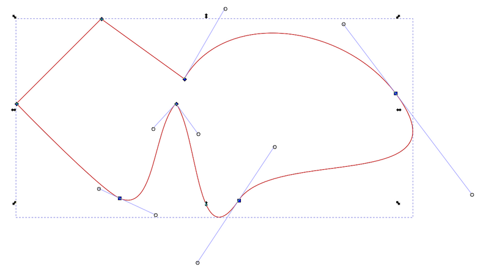
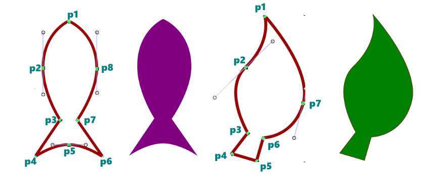

Os segmentos retos de uma curva bézier são feitos com um clique simples e os segmentos curvos são feitos ao clicar e arrastar com o mouse. Quando fazemos uma linha com apenas dois pontos, costumamos chamar de linha simples, alguns softwares até possuem uma ferramenta própria para desenho de linhas simples. Quando criamos uma linha com três pontos ou mais costumamos chamar de polilinha, pois ela possui dois ou mais segmentos de curva. Os segmentos de uma linha podem ser manipulados de maneira independente com uma ferramenta de edição de vértices que possui alças para distorção livre. Observe na imagem abaixo uma curva fechada e as alças de edição da ferramenta de edição de vértices.
Apesar de utilizarmos o termo curva para qualquer segmento, inclusive para os segmentos retos, alguns segmentos podem possuir um ângulo de curvatura, nesse caso os chamamos de arco. Quando inserimos o último ponto da curva dentro do primeiro estamos “fechando” a curva, nesse caso ela estará na categoria de curvas fechadas. Curvas abertas possuem vértices e bordas e curvas fechadas possuem vértices, bordas e face. Veremos estes conceitos mais a fundo daqui pra frente.
Agora vamos exercitar um pouco o que aprendemos, num tutorial rápido de treinamento para absorvermos melhor o trabalho com curvas.
Observe a imagem abaixo e tente seguir o passo a passo.
1. Clique na ferramenta Caneta Bézier ou pressione B.
2. Clique na tela para definir o ponto inicial (p1).
3. Clique e arraste para baixo para definir o p2.
4. Clique para definir o p3.
5. Clique para definir o p4.
6. Clique e arraste para a direita para definir o p5.
7. Clique para definir o p6.
8. Clique para definir o p7.
9. Clique e arraste para cima para definir o p8.
10. Clique dentro do p1 para fechar a forma.
Você pode usar a tecla control ao arrastar para garantir maior precisão ao definir um arco enquanto desenha.
Certamente sua forma não deve ter ficado exatamente como a da imagem, não se preocupe, além de ser seu primeiro desenho com curvas, geralmente o que fazemos realmente é criar a curva da maneira mais prática e rápida e depois editá-la para consertar imperfeições e definir sua forma. Mas se saiu bem-feita, meus parabéns!
Antes de começarmos a editar os nós da curva, faremos o segundo desenho para seguir no embalo. Observe a imagem anterior e tente seguir o passo a passo.
1. Clique para definir o ponto inicial (p1).
2. Clique e arraste na diagonal para definir o p2.
3. Clique para definir o p3.
4. Clique para definir o p4.
5. Clique para definir o p5.
6. Clique para definir o p6.
7. Clique e arraste na diagonal para definir o p7.
8. Clique dentro do p1 para fechar a forma.
Antes de passarmos à etapa de edição, salve o arquivo em sua pasta com o nome Curvas Bézier.svg.